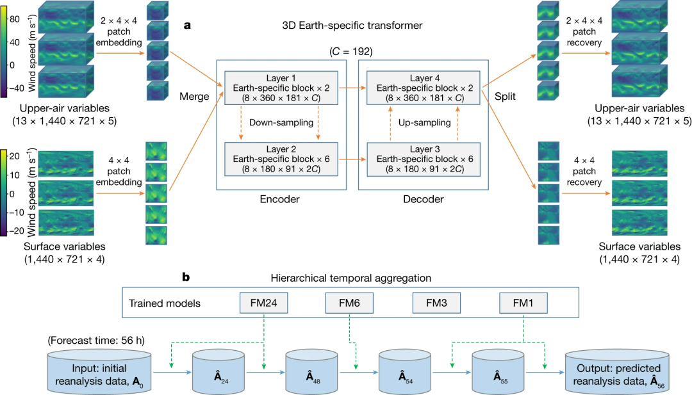

华为预测天气大模型
来自华为发表于nature的《Accurate medium-range global weather forecasting with 3D neural networks》。
现阶段，AI 气象预报模型精度不足主要有两个原因：
- 第一，现有的 AI 气象预报模型都是基于 2D 神经网络，无法很好地处理不均匀的 3D 气象数据。
- 第二，AI 方法缺少数学物理机理约束，因此在迭代过程中会不断积累迭代误差。
为了解决上述问题，来自华为云的研究人员提出了一种新的高分辨率全球 AI 气象预报系统：盘古气象（Pangu-Weather）大模型。
摘要
天气预报对于科学和社会都很重要。目前，最准确的预报系统是数值天气预报（NWP）方法，该方法将大气状态表示为离散网格，并数值求解描述这些状态之间转变的偏微分方程1。然而，这个过程的计算成本很高。最近，基于人工智能的方法2已经显示出将天气预报加速几个数量级的潜力，但预报精度仍然明显低于 NWP 方法。
作者证明，配备地球特定先验的三维深度网络可以有效处理天气数据中的复杂模式，并且分层时间聚合策略可以减少中期预测中的累积误差。经过 39 年的全球数据训练，盘古天气程序与世界上最好的 NWP 系统（欧洲中期天气中心的业务综合预报系统）相比，对所有测试变量的再分析数据获得了更强的确定性预报结果预测 (ECMWF)3 . 方法也适用于极端天气预报和集合预报。当用再分析数据初始化时，跟踪热带气旋的精度也高于ECMWF-HRES。
贡献
首先，将高度信息整合到一个新的维度中，以便深度神经网络的输入和输出可以在三个维度上概念化。
作者进一步设计了一个三维（3D）地球特定变压器（3DEST）架构，将地球特定先验注入深层网络。实验表明，3D 模型通过将高度表达为单独的维度，能够捕获不同压力水平下大气状态之间的关系，从而产生显着的精度增益
其次，作者应用了分层时间聚合算法，该算法涉及训练一系列具有增加的预测提前期的模型。因此，在测试阶段，中期天气预报所需的迭代次数大大减少，累积预报误差也得到缓解。第五代ECMWF再分析（ERA5）数据的实验验证了盘古天气在确定性预报和极端天气预报方面的优势，同时速度比业务IFS快10000倍以上。
模型

局限性
（1）盘古天气是根据再分析数据进行训练和测试的，但现实世界的预报系统是在观测数据上工作的。这些数据来源之间存在差异
（2）其次，本文没有研究降水等一些天气变量。忽略这些因素可能会导致当前模型缺乏一些能力，例如利用降水数据来准确预测小规模极端天气事件，例如龙卷风爆发。
（3）基于人工智能的方法产生更平滑的预测结果，增加了低估极端天气事件严重程度的风险。我们研究了一个特殊情况，即气旋跟踪，但还有很多工作要做。
（4）使用不同提前期的模型可能会引入时间不一致。这是一个具有挑战性的话题，值得进一步研究。
哈哈哈
论文多次提到了”要是能拥有更强大的集群和更大的GPU内存，就能更进一步“的意思，大家都缺卡吗，哈哈哈。